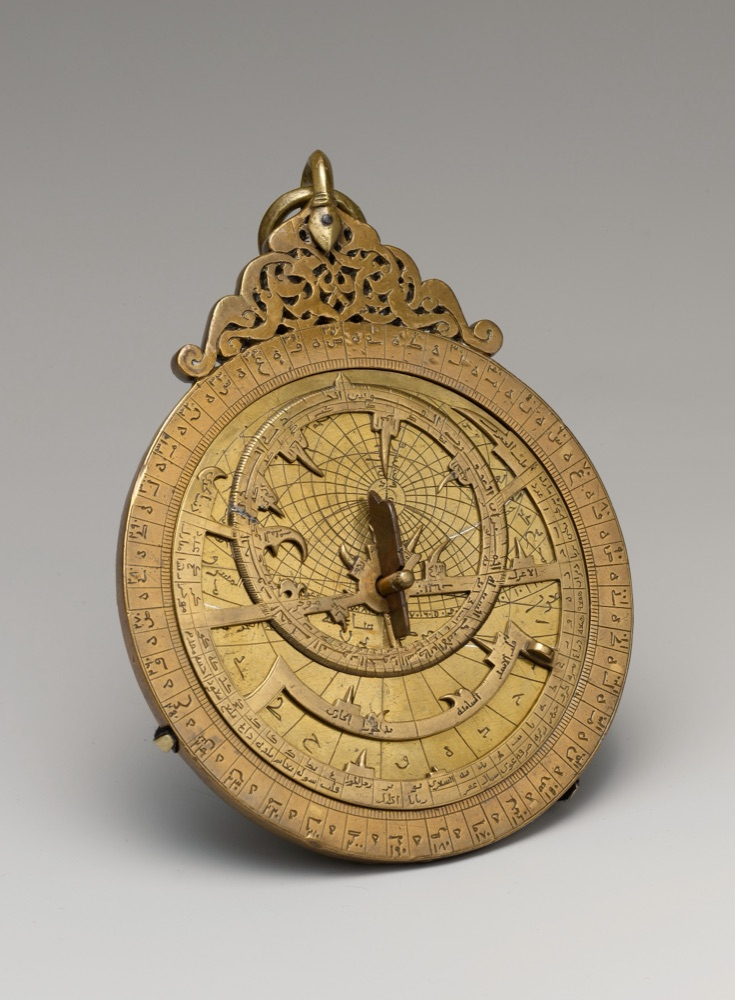
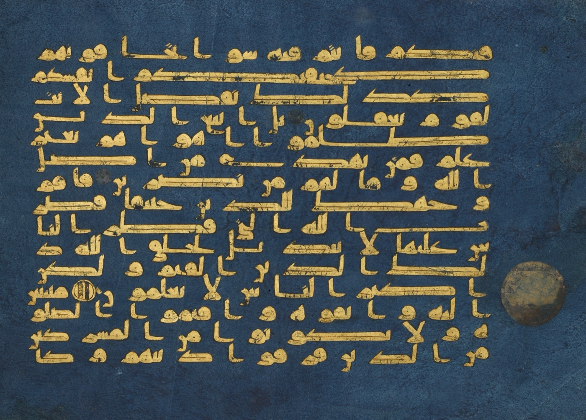
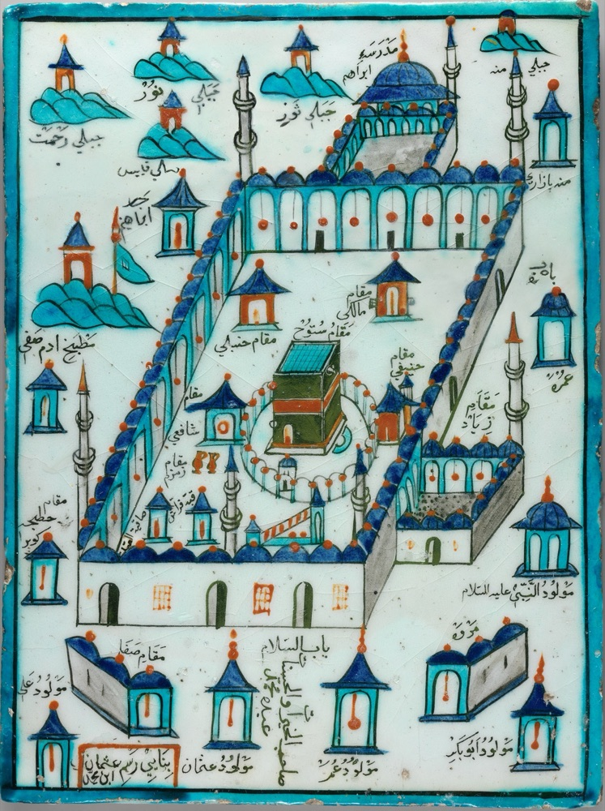
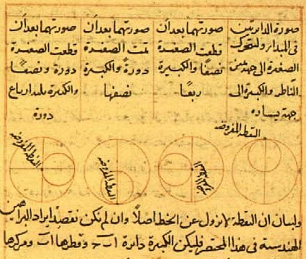
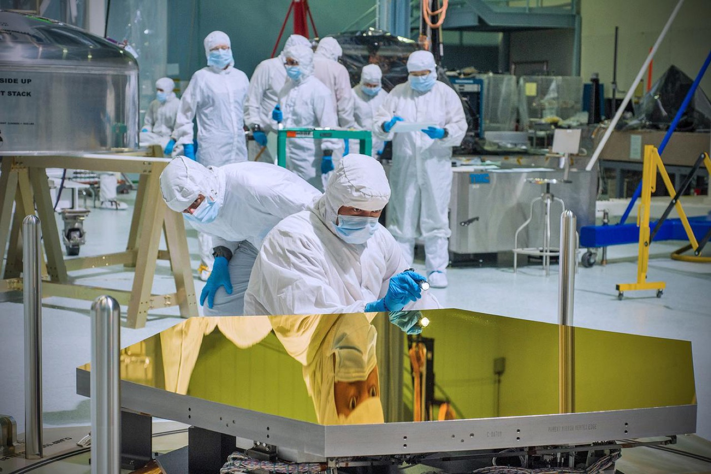
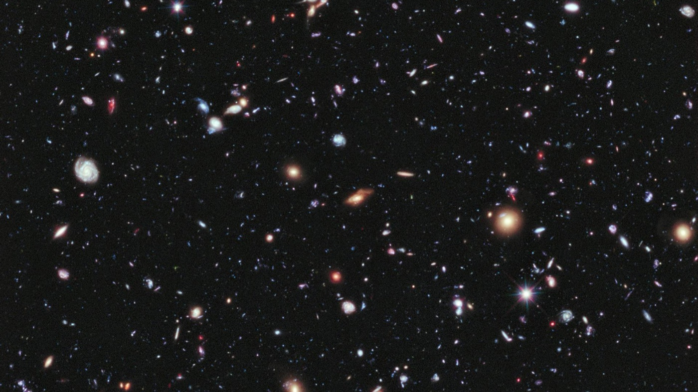
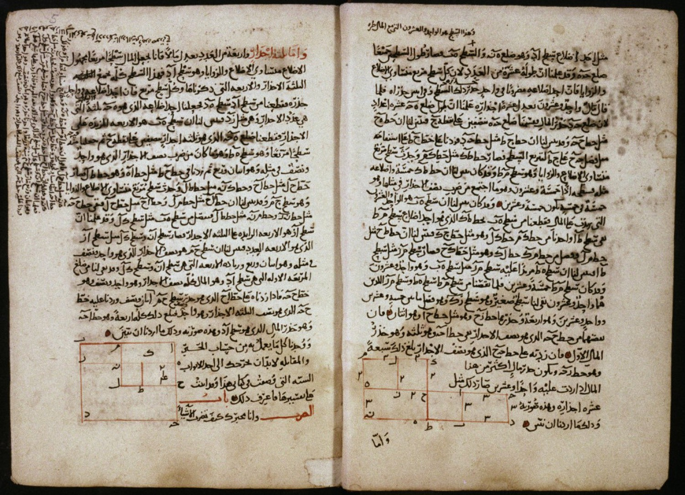
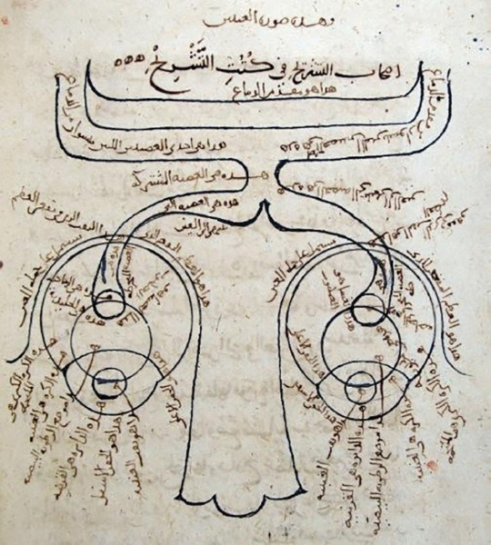
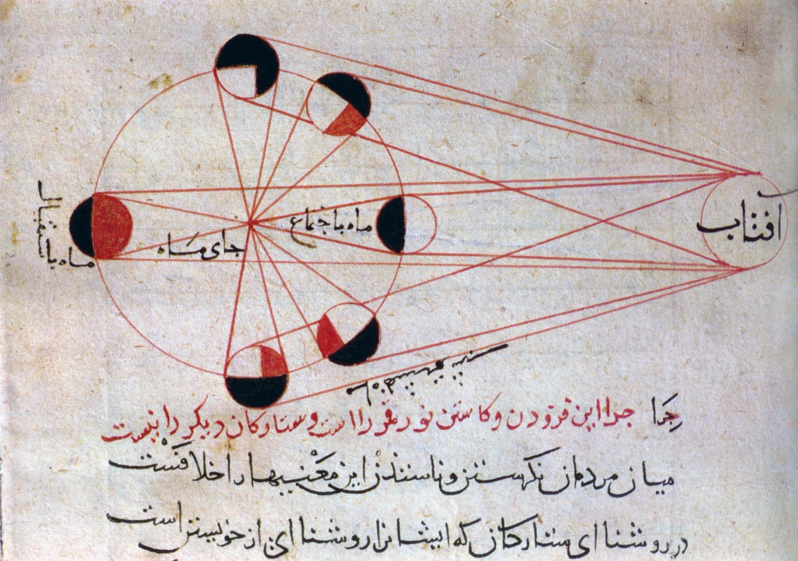

The short answer
The Quran doesn’t speak in the technical terms of a science textbook. It gives signs. But “the Quran is not a science book” is the wrong conclusion to draw from that.
The Quran wasn’t laid out as a book of fiqh or politics either, yet Muslims drew both from it. It gives the basic principles, and each generation is meant to go further.
This is the last book, so it has to speak to every age that follows. Research from it can’t close, because each generation brings new tools and should see more than the one before.
The habit that keeps us small is the opposite one. Someone else makes a discovery, and we post the matching ayah. If the Quran said it 1400 years ago, why didn’t we say it first? The research should have come from us.
The Quran keeps telling you to look

The Quran doesn’t only ask its readers to pray and behave well. It keeps sending them to the sky, the earth and their own bodies, and it calls what they find there signs.
- Think about how it began. The believers it praises “give thought to the creation of the heavens and the earth” (3:191). Creation happened long ago, so reaching it takes research.
- Go and dig. “Travel through the land and observe how He began creation” (29:20). The evidence is in the earth.
- Look out and look in. “We will show them Our signs in the horizons and within themselves” (41:53). Looking within isn’t only spirituality. It is also biology, medicine and the brain.
- Don’t walk past. “And how many a sign within the heavens and earth do they pass over while they, therefrom, are turning away” (12:105).
Surah Al-Jathiyah (45:3-6) lists more: living creatures, night and day, provision from the sky and the turning of the winds. Where the Quran says “this is My sign,” you often find astronomy, biology or physics.
Earlier generations believed these verses with the tools they had. We have telescopes now, and people 500 years from now may laugh at how little we saw with them.
The challenge in Quran 46:4
One verse turns all of this into a challenge. It tells those who worship anything besides Allah: “Bring me a scripture [revealed] before this or a [remaining] trace of knowledge, if you should be truthful.”

AASAAR takes its name from that phrase, athāratin min ʿilm, a trace of knowledge. We read it as a challenge that still stands: if you’re chasing the truth, bring your evidence. That reaches every field of knowledge, today and in the centuries to come.
A book that sets a challenge like that can’t be read as if the research is finished.
Later generations may understand better

The Prophet ﷺ said this himself. In his sermon on the Day of Nahr during the Farewell Hajj, he told those present to pass his words to those who were absent, and he gave the reason.
فَرُبَّ مُبَلَّغٍ أَوْعَى مِنْ سَامِعٍ
“The informed one might comprehend it better than the present audience.” (Sahih al-Bukhari 1741)
He said this to the companions themselves. If someone who hears his message later might understand it better than those who stood in front of him, understanding isn’t locked in any one century. That’s why we believe each generation should go back to the Quran and go further.
Why “not a science book” is the wrong conclusion
The phrase sounds careful, but it closes a door the Quran left open. It teaches students to expect nothing from the book beyond morals.
Think of a physics book. It isn’t a maths book, yet maths runs through it from the assumptions to the conclusions. Saying “this is physics, so it has nothing to do with maths” would be foolish.

We see the Quran the same way. It isn’t arranged as fiqh, politics or science, but it gives the principles those fields can start from. It is the superset, and the sciences open up inside it.
The limit is inherited. One generation doesn’t face a question, and the next treats that silence as a boundary. Psychology calls this priming. Over time, caution turns the boundary into a prison we built ourselves.
The split between din and dunya is the real problem. The Quran describes Yusuf taking charge of Egypt’s stores and planning for seven years of famine (12:47-55). It describes the great works built for Sulayman (34:13) and his palace of glass (27:44). Building the world is part of the din.
Muslim scholars have long disagreed here. Al-Ghazali said the Quran refers to sciences such as medicine and anatomy. Al-Shatibi limited these verses to what the first audience understood, and some scholars today hold a similar line. AASAAR stands with the open door.
Why the “1400 years ago” habit hurts us
Posting an ayah after every discovery feels like confidence. It actually shows that we’re following. The problem with scientific miracle posts isn’t belief in the Quran. The problem is arriving after the work is done.
- We arrive late. Others spend the years and the billions, then we show up with a comment.
- It raises an obvious question. If the book already said it, why did we keep quiet until someone else found it?
- It makes others the judge. A verse starts to seem respectable only once a journal has confirmed it.
- It costs us our standing. People believe those who hold knowledge. A gardener can be right and ignored, while the landlord can be wrong and obeyed.
- It makes the Quran look like a footnote. We offer it shyly, like a nice piece of advice, while Newton’s findings are called laws.

The answer is to reverse the order. Do the research from the Quran first, then publish it in the form researchers respect. When a student can say “my Lord called this a sign, so I studied it,” people will open the book to see what gave them that idea.
A worked example: Quran 51:47 and the expanding universe
This verse shows why research can’t close. A student today can see a relevance in it that earlier centuries had no way to observe.
وَالسَّمَاءَ بَنَيْنَاهَا بِأَيْدٍ وَإِنَّا لَمُوسِعُونَ
“And the heaven We constructed with strength, and indeed, We are [its] expander.” (Saheeh International)
The key word is mūsiʻūn, from the root و س ع, which carries the sense of width and capacity.
| Reader | Reading of mūsiʻūn |
|---|---|
| Al-Tabari | Allah has the capacity and power to create what He wills. |
| Ibn Zayd, reported by al-Tabari | Allah made the heaven wide. |
| Ibn Kathir | “We have widened its reaches” and raised it without pillars. |
| A reader today | Allah keeps widening the heaven, the same fact astronomers now observe. |

Earlier readers believed this verse with what they could see. They had no way to observe the universe expanding. Once that observation came, modern cosmology was built on it.
The last reading isn’t in those classical commentaries, so it has to be argued from the Arabic. That’s what research is for. It’s also why the work should have been ours: the verse was in our hands long before the telescope.
A student could start here: across every use of this root in the Quran, what does the form mūsiʻ describe? Then take that question to a physicist.
The Muslim scholars who did the work
These sciences were once in Muslim hands. These scholars measured, calculated and argued for themselves, and nobody had to confirm their work first.



| Scholar | What they did |
|---|---|
| Al-Khwarizmi | Wrote his algebra for practical needs such as inheritance, trade and measuring land. The third and longest part covers problems of legacies. |
| Ibn al-Haytham | Challenged Ptolemy, and told readers of scientific work to “make himself an enemy of all that he reads.” He said to suspect yourself too. |
| Al-Biruni | Measured a hill’s height, then the dip of the horizon from its top, to calculate the Earth’s radius. The result was about 2% from the modern reference value. |
The research once came from our side. The aim is to bring it back.
Research first, then show the world
The fix starts with a change of mind: the Quran comes first, and the research follows from it. Then the work has to reach people.
- Start with an ayah. Read it in its context, not as a clipped quote.
- Check the words. Read the root and its full range in the classical lexicons, not one translator’s choice.
- Ask a question. Write down what the verse makes you want to find out.
- Go to the field. Take the question to the discipline that can investigate it.
- Theorize clearly. State your idea so that someone could prove it wrong.
- Get two reviews. A scholar of classical Arabic checks the root and context. A researcher checks the method, data and maths.
- Publish it. Put your name on the work and say which ayah started it.
Take 29:20, “Travel through the land and observe how He began creation.” The late post says the Quran already knew. The research asks: what evidence in the earth would show how life began?
Picture a teenager’s bedside Quran covered in yellow sticky notes: what they’ve understood, what they haven’t, and a new idea from today’s reading. That’s where this begins.
قُلْ سِيرُوا فِي الْأَرْضِ فَانظُرُوا كَيْفَ بَدَأَ الْخَلْقَ
ب د أto begin, to start, to originate
What evidence in the earth would show how life began?
Ask a geologist: what do the oldest rocks record?
Then make the work visible. One student publishes a reading, and someone else builds a different idea from it. Do that with thousands of students and you have a research machine, one that could reach ideas earlier generations never did.
If a test fails, your reading failed. The Quran didn’t.
Common questions
Is the Quran a science book?
It doesn’t use science’s technical terms, and it isn’t arranged like a textbook. But it gives signs and principles that research can start from, so “not a science book” is the wrong place to stop.
Are the scientific miracles in the Quran real?
We believe the Quran is true and that its signs run through creation. What we reject is finding the ayah only after someone else’s discovery.
Does the Quran encourage science?
Yes. It tells readers to observe the sky, travel the earth and reflect on how creation began, in verses such as 3:191 and 29:20. We read that as a call to do the research ourselves.
Why should Muslims publish research?
Because people follow those who hold knowledge. If Muslims publish serious work and say which ayah started it, the world has a reason to open the Quran.
Do I need Arabic to research the Quran?
Not to start. You do need to check the root and its range instead of trusting one translation, and a scholar of classical Arabic should review the work.
Sources
Verse translations are Saheeh International. The English of Ibn Kathir is AASAAR’s own working translation.
- Tafsir al-Tabari on 51:47
- Tafsir Ibn Kathir on 51:47
- Sahih al-Bukhari 1741
- Ismail and Asnawi, Scientific Approach in Quranic Exegesis (2021)
- Çapan, A Critical Approach to Shatibi’s Interpretation
- Proving scientific theories from the Quran, Mufti Online
- Al-Khwarizmi, Complete Dictionary of Scientific Biography
- Sabra, Ibn al-Haytham, Harvard Magazine (2003)
- Sparavigna, The Science of al-Biruni (2013)